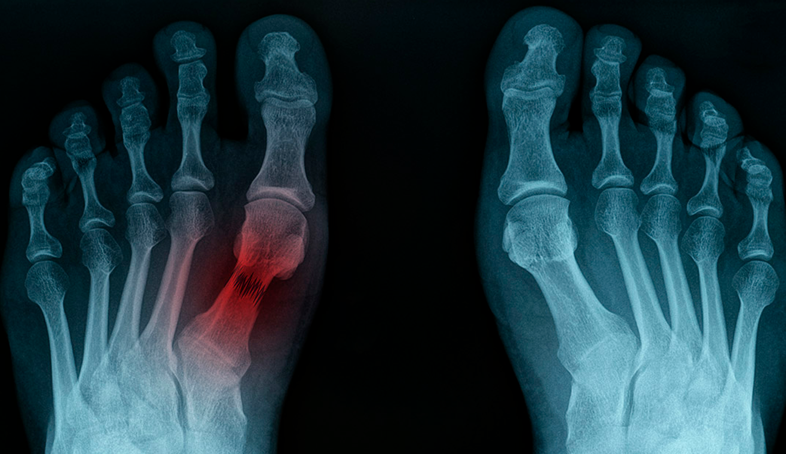
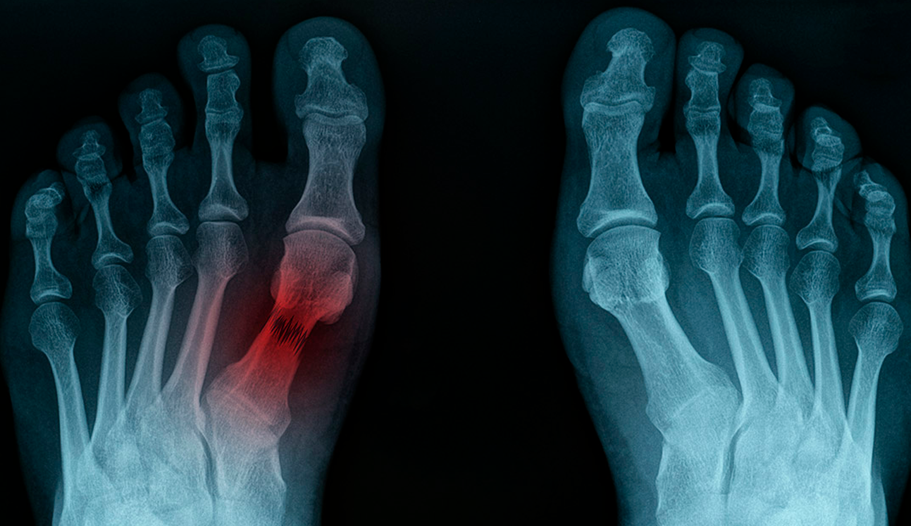

Fratura
 

O conceito de fratura é a perda da continuidade óssea. Em outras palavras, qualquer quebra ou rachadura no osso é uma fratura.
Na maioria das vezes, essas são o resultado de traumas aplicados aos ossos.
Há, entretanto, algumas nuances que fogem do lugar comum da ideia de que fraturas são causadas por uma força excessiva sobre o osso.
Neoplasias e outras condições clínicas podem levar a fratura de ossos mesmo com forças de baixa intensidade.
Já outras características como o estado da cobertura de pele no local da fratura podem mudar completamente sua forma de tratamento.
O que é?
Fraturas traumáticas são mais usuais, por isso, são a primeira imagem que nos vem à cabeça quando pensamos em um “osso quebrado”, com vários de nós possuindo inclusive experiências pessoais na infância ou mesmo na idade adulta de um dedo ou osso do antebraço fraturado.
O trauma é a causa mais comum de fraturas ósseas, ocorrendo pela ação de uma força que excede a carga de falha do osso.
Além das traumáticas, uma fratura pode surgir de ossos enfraquecidos submetidos a forças de estresse habituais. No local de neoplasias ou até mesmo após uso de medicamentos, por exemplo, a carga imposta por atividades do dia-a-dia podem ser suficientes para fraturar o osso.
Assim a definição, nos livros especializados, de fraturas como a perda de solução de continuidade de um osso é um conceito muito amplo, e que não nos dá muitas informações. Surgem então as classificações e subclassificações, com o objetivo de que a nomenclatura das fraturas ósseas permita mais prontamente, entender a localização, extensão, características e até mesmo as suas causas.
Classificações e subclassificações.
As fraturas de ossos longos podem acometer qualquer uma das três principais regiões do osso:
-
nas epífises: porções mais próximas às extremidades e às articulações;
-
nas metáfises: região intermediária entre a epífise e a diáfise. Trata-se da porção mais vascularizada dos ossos;
-
nas diáfises: corpo ósseo.
É possível classificar uma fratura de acordo com a morfologia da lesão:
-
Fraturas simples (com traço em espiral, transverso ou oblíquo);
-
Fraturas em cunha;
-
Fraturas multifragmentadas.
O acometimento das articulações também deve ser estudado sempre que o traço de fratura atinge ou encontra-se centrado nas epífises.
Determinar se a fratura é extra-articular, parcialmente articular (quando apesar do traço de fratura atingir a superfície articular, ainda há conexão da epífise articular com o restante do osso) ou completamente articular tem implicações na definição do tratamento da fratura.
Fraturas abertas e fechadas.
Fratura fechada é quando a pele sobre a fratura encontra-se íntegra, enquanto uma aberta é quando a pele se rompe e o osso fica exposto.
Apesar de simples, esse conceito é definidor de conduta pela maior chance de infecção, associada às fraturas abertas.
O tratamento cirúrgico muitas vezes é imperativo, com condutas variando de cobertura do sítio de fratura com tecidos adjacentes à região exposta, até mesmo a reparos vasculares devido ao dano de partes moles associado.
Para todas as fraturas abertas associa-se tratamento antibiótico. Definir onde o trauma ocorreu pode mudar ainda o espectro de cobertura desse tratamento, com traumas na zona rural necessitando de cobertura contra germes anaeróbios.
Fraturas atraumáticas
Vimos que a maior parte das fraturas ocorrem por meio de traumas de alta energia que ultrapassam a capacidade de suportar cargas e absorver energia do osso.
Aquelas fraturas que ocorrem devido a traumas de baixa energia servem como um alerta sobre alguma condição subjacente que enfraqueceu o osso a esse ponto de susceptibilidade.
Alterações metabólicas, a mais comum delas representada pela osteoporose, distúrbios da homeostase mineral óssea, doenças do colágeno e ainda efeitos adversos de medicamentos, sobretudo glicocorticoides, são as causas mais encontradas para esse enfraquecimento.
Fraturas por estresse são um segundo grupo de fraturas atraumáticas que ocorrem como consequência de uma pressão frequente e repetitiva em determinada região óssea. Esse tipo é mais comum em atletas e, na maioria das vezes, atinge os membros inferiores como a tíbia e os metatarsos.
IMPORTANTE: Somente médicos e cirurgiões-dentistas devidamente habilitados podem diagnosticar doenças, indicar tratamentos e receitar remédios. As informações disponíveis em Dicas em Saúde possuem apenas caráter educativo.
 Aperte aqui para
ligar para os bombeiros!
Aperte aqui para
ligar para os bombeiros!
Primeiro Socorros relacionados...
As fraturas são, de uma maneira geral, bem percebidas pelos pacientes com o contexto do trauma, seguido de dor intensa no local, perda da função do osso afetado, o que depende da região envolvida, acompanhadas ou não de deformidades regionais causadas pelo osso deslocado da sua posição habitual.
Ao notar que algum osso sofreu uma fratura, é essencial imobilizar o membro lesionado. Essa ação evita que o quadro se agrave, além de ajudar a diminuir a dor na região.
Caso a fratura seja exposta, o ideal é cobrir o local com um pano limpo e levar o paciente, o mais rápido possível, para o hospital. Esse tipo de lesão envolve maior risco de contaminação e requer, assim, cuidados extras e imediatos.
Para diagnóstico definitivo de uma fratura é realizada uma avaliação ortopédica.
Além da integridade óssea, será pesquisada a associação da fratura com disfunções neurovasculares e investigar sinais de lesão de tecidos moles e rupturas na pele da área da lesão.
O ortopedista ditará ainda a necessidade de exames complementares, como radiografias, tomografias ou ainda ressonâncias magnéticas.
Além do alívio da dor, o tratamento definitivo das fraturas envolve a sua redução.
Esse termo é utilizado para o ato de realocar o osso em sua posição habitual, o que pode ser feito por meio de uma cirurgia (redução cruenta ou aberta) ou pela manipulação da região sem necessidade de incisões na pele (redução incruenta ou fechada).
A região afetada invariavelmente requer algum período de imobilização que pode variar bastante dependendo do local da fratura.
Há vários tipos de imobilização que podem ser usados nesse período do tratamento, entre elas encontram-se os famosos aparelhos gessados, imobilizando as articulações adjacentes ao traço de fratura.
As imobilizações cirúrgicas podem utilizar fixadores externos, como os fixadores circulares Ilizarov e os fixadores internos pautados no uso de placas e parafusos que fazem a fixação do osso.
Por fim, a fim de restaurar os movimentos do paciente é imprescindível a realização de fisioterapia conforme indicação médica.
O tempo de recuperação total de uma fratura tende a variar bastante e depender de uma série de fatores como a idade do paciente, o osso afetado, tipo de fratura, comorbidades e capacidade de recuperação individual.